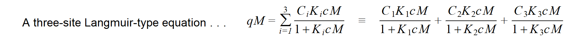

Material to support teaching in Environmental Science at The University of Western Australia
Material to support teaching in Environmental Science at The University of Western Australia
Units ENVT3361, ENVT4461, and ENVT5503
A Story About Non-linear Regression
Fitting site-binding models to humic-metal complexation data
Andrew Rate
2025-12-04
Andrew Rate, School of Agriculture and Environment, The University of Western Australia, 2025-12-04
Introduction
The Back Story
The problem is to write R code that replicates the output of some
Fortran-77 code I wrote and used in my PhD thesis (Rate, 1990). The
original Fortran code was to fit models to data on complex-formation of
copper and cadmium ions to humic acids (stable organic macromolecular
substances present in soils; see Figure 1). Optimisation was originally
done with the amoeba Nelder-Mead simplex algorithm from
Press et al. (1986). The same multidimensional simplex
algorithm is implemented in R in the optim() function. I
originally used a hybrid Newton-Raphson/bisection method to solve cubic
equations (subroutine newton from Press et al.,
1986). To simplify the code and remove the need to specify the
differential function, I used the R uniroot() function
which worked fine with my code and uses Brent's method for finding
univariate roots using an adaptive hybrid of bisection, the secant
method, and inverse quadratic interpolation. These functions allow all
the hard number-crunching to be done in base-R (R Core Team, 2025), and
I used the stringr package (Wickham, 2025) to manipulate
object and file name strings.
Figure 1: Map of areas in Waitaha/Canterbury, Aotearoa New Zealand where soil was collected for extraction of humic acids.
The Setting
It's very common in disciplines like environmental and soil sciences to present adsorption data (such as metal adsorption on humic acids) as the amount of substance adsorbed (q) vs. the concentration of that substance in solution (c). This is the classical “adsorption isotherm” (Figure 2), and the data are commonly fitted to empirical equations such as the Langmuir or Freundlich equations.

Figure 2: Classical isotherm representation of adsorption, for the reaction of copper ions with solid-phase calcium humate derived from humic acid extracted from Waimari Peat, Waitaha/Canterbury, Aotearoa New Zealand. Circle symbols show experimental observations, and the smooth curve represents a single site-binding model (the most simple, a.k.a. the ‘Langmuir’ equation).
There are many issues which make this “traditional” isotherm approach problematic. There is a whole universe in the rabbit hole of whether a model can be realistic if it describes such reaction only in terms of the concentrations of adsorbed and non-adsorbed species (e.g. ignoring electrostatic effects). Similar diversions can be indulged in the discussion of whether a large complex molecule like a humic acid would ever have only one type of binding site defined by a concentration \(C_{1}\) and a conditional stability “equilibrium” constant \(log(K_{1})\) as assumed by the Langmuir equation (the “heterogeneity” rabbit-hole). These arguments are scientifically valid, but incessant. For practical purposes, therefore, many researchers pragmatically implement a model with 2 or more Langmuir-type sites having additive behaviour. This approach simplifies (or even ignores) the real physicochemical issues, but provides enough adjustable fitting parameters to describe the data.
Those are the “chemistry” issues, but fitting equations/models is also a mathematical/statistical undertaking, and there are some problems with the traditional isotherm approach there, too.
Typically isotherms are generated by adding (e.g. titrating) metal ion solutions to a suspension or solution of adsorbent (forms of humic acid, in this case). The experimental conditions (mass of adsorbent, amounts of metal ions added, volumes, temperatures, etc.) are very well-controlled, and statistically are the most appropriate independent variables. During the metal ion addition/titration experiment, the critical measurement is the concentration of metal ion not adsorbed to the adsorbent. For my PhD experiments, I measured unadsorbed (dissolved) metal ion concentration (\(cM\)) using ion-selective electrodes, which have a linear calibration between log-concentration and electrode potential, with well-established theory from the Nernst Equation. My point here is that the dependent variable for model fitting should reflect the actual experimental measurement (Figure 3). We could use the original electrode potentials, but since potentials are collinear with log10-metal concentrations, it makes sense to use concentrations.

Figure 3: Adsorption isotherm for Cu²⁺-calcium humate shown as cM (note log-scale) as a function of qM. Circle symbols show experimental observations, and the smooth curve again epresents the best-fit Langmuir equation.
So far, so good... the \(log_{10}(cM)\) vs. \(qM\) plot still looks like an adsorption curve... but we also end up with a maths problem. The usual adsorption isotherm equations are written in terms of adsorbed metal (\(qM\)) being a function of dissolved metal, \(cM\) (so dissolved metal concentration is the independent variable, which we don't want).

Conveniently, algebraic rearrangement of these equations to solve for
\(cM\) gives polynomials, where the
polynomial order is equal to the number of sites. This makes life easy
with a two-site model; with three sites, however, the equation is cubic.
To predict \(cM\), we need to find the
root(s) of the cubic equation, which can't be done algebraically, and
requires a numerical solution – an algorithm, i.e. some
code.
The cubic equation . . . \(cM = A + B(qM) + C(qM)^{2} + D(qM)^{3}\)
where the parameters \(A, B, C\), and \(D\) for a 3-site model are:
\(A = qM;\)
\(B = qM(K_{1}+K_{2}+K_{3}) - (C_{1}K_{1}+C_{2}K_{2}+C_{3}K_{3});\)
\(C = K_{1}K_{2}(qM-(C_{1}+C_{2}) + K_{1}K_{3}(qM-(C_{1}+C_{3}) + K_{2}K_{3}(qM-(C_{2}+C_{3});\)
\(D = K_{1}K_{2}K_{3}(qM-(C_{1}+C_{2}+C_{3})\)
Figure 4: Curve plots for cubic functions for which roots need to be found. Each root is the predicted Cu²⁺ concentration (cM) for each amount of Cu²⁺ adsorbed to calcium humate (qM).
Coding it
First we need to define some user functions:
- one to set up our cubic equation for feeding into the
uniroot()function, and - a second which calculates a residual sum-of-squares to be minimised
by the
optim()function.
Some things to note:
- we need to choose a sufficient interval for the
uniroot()function that exceeds the range of data, to allow for more extreme values that might be generated during simplex transformations - we also lower the default tolerance for the
uniroot()function, to allow for sometimes very small changes in function values close to the roots (Figure 4). - For the same reason we allow
unirootto extend the search interval using the optionextendInt = "yes".
# 1. Basic form of cubic equation to pass to uniroot() function
fcubic <- function(x, a, b, c, d) {
a + b*x + c*x^2 + d*x^3
}
# 2. Calculate residual (error) sum-of-squares at each iteration of optim()
calcSSE <- function(par, data, justSSE=TRUE){
# convert log10-parameters
C1 <- unname(10^par[1])
K1 <- unname(10^par[2])
C2 <- unname(10^par[3])
K2 <- unname(10^par[4])
C3 <- unname(10^par[5])
K3 <- unname(10^par[6])
# calculate cubic coefficients
A = data[,2]
B =(data[,2]*(K1+K2+K3)) - (C1*K1 + C2*K2 + C3*K3)
C = K1*K2*(data[,2]-(C1+C2)) + K1*K3*(data[,2]-(C1+C3)) +
K2*K3*(data[,2]-(C2+C3))
D = K1*K2*K3*(data[,2]-(C1+C2+C3))
# calculate roots:
# - first pre-allocate memory in data frame...
cMpred <- data.frame(cMpred=rep(NA, nrow(obs)), f.root=rep(NA, nrow(obs)))
# ... then loop to find roots for cubic equations for each data point
for(i in 1:nrow(obs)){
result0 <- uniroot(fcubic, interval=c(1e-15, 10*max(data$cM,na.rm=T)),
a=A[i], b=B[i], c=C[i], d=D[i],
tol=1e-12, extendInt = "yes")
# write root and f(root) to data frame row i
cMpred[i,] <- c(unname(log10(result0$root)),unname(result0$f.root))
}
pred <-
data.frame(qMobs = data$qM, cMobs.log = log10(data$cM),
cMfit.log = cMpred[,1], y.at.root = cMpred[,2])
# calculate residuals
pred$cMres <- pred$cMobs.log - pred$cMfit.log
# calculate squared difference for total sum-of-squares
pred$diffsq <- (pred$cMobs.log - mean(pred$cMobs.log, na.rm=T))^2
# calculate residuals squared for error sum-of-squares
pred$cMres2 <- pred$cMres^2
ssq <- colSums(pred[ ,c(ncol(pred)-1,ncol(pred))]) # just last 2 columns
names(ssq) <- c("SST","SSE")
if(justSSE==TRUE){
SSE <- ssq["SSE"]
return(SSE)
} else {
r.squared <- 1-(ssq["SSE"]/ssq["SST"])
# define and format output object
# if(is.matrix(par)) par <- par[1,]
result <- list(parameters=par,
data.table=pred,
sums.of.squares=ssq,
stats=r.squared)
# names(result[[3]]) <- c("SST","SSE")
names(result[[4]]) <- "r.squared"
return(result)
}
}Check our functions!
cat("The object 'fcubic' is a", class(fcubic), "\n");cat("The object 'calcSSE' is a", class(calcSSE))## The object 'fcubic' is a function
## The object 'calcSSE' is a functionNow we need some inputs:
- Our data (at a minimum, two variables representing experimental observations; qM and cM)
- Initial estimates for the model parameters. From the equations and
code above, we need guesses at values for C1, K1, C2, K2, C3, and
K3.
I recommend using log-transformed values, so the simplex does not warp into negative numbers for adsorption site densities (Ci) or conditional stability constants (Ki), which would make no sense.
# our dataset
infile <- "wpcu05b.csv"
obs <- read.csv(infile, stringsAsFactors = TRUE)
str(obs) # to check it
# named vector of log-transformed parameters
P <- log10(c(2., 7.e4, 30., 4.e3, 400., 2.e2))
names(P) <- c("logC1","logK1","logC2","logK2","logC3","logK3")
P## 'data.frame': 18 obs. of 5 variables:
## $ cM : num 4.89e-09 5.44e-09 1.07e-08 1.56e-08 1.96e-08 ...
## $ qM : num 0.00315 0.00315 0.00629 0.00629 0.00943 ...
## $ M.add : num 3.15e-07 3.15e-07 6.29e-07 6.29e-07 9.43e-07 ...
## $ VT : num 0.02 0.02 0.02 0.02 0.02 0.02 0.02 0.02 0.02 0.02 ...
## $ massHA: num 1e-04 1e-04 1e-04 1e-04 1e-04 1e-04 1e-04 1e-04 1e-04 1e-04 ...
## logC1 logK1 logC2 logK2 logC3 logK3
## 0.301030 4.845098 1.477121 3.602060 2.602060 2.301030
Do the optimisation for model fitting
We now have what we need to try optimisation, which will adjust the
parameters of our model to best fit the data, by minimising the residual
sum-of-squares in log10(cM). Note that the arguments for the
function to be minimised (calcSSE, that we made above) are
included as arguments for the optim() function. We also
increase the maximum iterations from the default value of 500.
Apparently the inverse of the Hessian matrix can allow us to calculate standard errors for the optimised parameters. We haven't done that here, but it may be a future improvement. (For simplex optimisation, the hessian matrix is calculated numerically, since we don't supply derivative (gradient) function(s).)
predOut <- optim(par=P,
fn = calcSSE,
data = obs,
justSSE=TRUE,
method = "Nelder-Mead", # this is the Simplex algorithm
hessian = FALSE, # we can do hessian=TRUE if we want
control = list(maxit=2000)) # max. 2000 iterations
{cat(paste("\n-------- OPTIMISATION by Nelder-Mead SIMPLEX method for",
substr(infile,1,str_locate(infile,"\\.")-1),"--------\n"))
print(predOut)}##
## -------- OPTIMISATION by Nelder-Mead SIMPLEX method for wpcu05b --------
## $par
## logC1 logK1 logC2 logK2 logC3 logK3
## -1.6107206 7.3839742 -0.2935944 5.1015828 5.3156356 -2.8998928
##
## $value
## [1] 0.06035422
##
## $counts
## function gradient
## 555 NA
##
## $convergence
## [1] 0
##
## $message
## NULLThe output of optim() above shows us the best-fit values
of the model parameters logC1...logK3, with
the minimised residual sum-of-squares ($value) ≃ 0.06.
Under $counts, the output shows the number of calls to the
function calcSSE (it was evaluated 555
times!), as the simplex made its multidimensional contortions (we didn't
need a gradient function). A $convergence
value of zero means the optimisation converged successfully.
More detail about the model output
It can be useful to inspect the output in full, not just the optimised parameters (especially if the results look weird or wrong).
The long output of our calcSSE function, obtained with
the option justSSE = FALSE, includes
- the optimised model
$parameters - a
$data.tablewith columns for- experimental observations
qMobsandcMobs.log - fitted values
cMfit.log - values of the cubic function at the roots (solutions) - these should be ≃ zero
- the residuals
cMres, squared residualscMres2, and squared differences from the meandiffsq
- experimental observations
- the total (
SST) and residual (SSE) sums-of-squares - the
r.squaredgoodness of fit value
The code below also outputs the optimised parameters as non-log10-transformed values for convenience.
# first retrieve optimised parameters from optim() results object
P <- predOut$par
# then use the calcSSE() function without restricting output to just SSE
calcOut <- calcSSE(par=P, data=obs, justSSE = FALSE)
cat(paste("\n---- Output for dataset",
substr(infile,1,str_locate(infile,"\\.")-1),
"based in OPTIMISED parameter estimates ----\n"))
print(calcOut)
# output non-log-transformed parameters as well
{rawpars <- 10^calcOut$parameters
names(rawpars) <- c("C1","K1","C2","K2","C3","K3"); print(rawpars, digits=4)}##
## ---- Output for dataset wpcu05b based in OPTIMISED parameter estimates ----
## $parameters
## logC1 logK1 logC2 logK2 logC3 logK3
## -1.6107206 7.3839742 -0.2935944 5.1015828 5.3156356 -2.8998928
##
## $data.table
## qMobs cMobs.log cMfit.log y.at.root cMres diffsq cMres2
## 1 0.00315 -8.310514 -8.272440 1.496226e-07 -0.038073398 1.1545100381 1.449584e-03
## 2 0.00315 -8.264321 -8.272440 1.496226e-07 0.008118880 1.0573782888 6.591621e-05
## 3 0.00629 -7.971836 -7.920802 2.008326e-09 -0.051033666 0.5414065211 2.604435e-03
## 4 0.00629 -7.806041 -7.920802 2.008326e-09 0.114760893 0.3249099845 1.317006e-02
## 5 0.00943 -7.706859 -7.689381 1.829176e-08 -0.017477930 0.2216773603 3.054780e-04
## 6 0.00943 -7.564633 -7.689381 1.829176e-08 0.124747094 0.1079787681 1.556184e-02
## 7 0.01398 -7.554863 -7.430552 4.537565e-11 -0.124310989 0.1016530583 1.545322e-02
## 8 0.01397 -7.497983 -7.431064 4.498171e-11 -0.066918580 0.0686180757 4.478096e-03
## 9 0.01886 -7.222863 -7.199548 1.824740e-09 -0.023315083 0.0001734219 5.435931e-04
## 10 0.01886 -7.186619 -7.199548 1.824740e-09 0.012929011 0.0024416515 1.671593e-04
## 11 0.02513 -6.929593 -6.947124 2.482648e-08 0.017531526 0.0939052195 3.073544e-04
## 12 0.02513 -6.927750 -6.947124 2.482648e-08 0.019374102 0.0950378910 3.753558e-04
## 13 0.03140 -6.728391 -6.741511 9.540941e-09 0.013120089 0.2576999586 1.721367e-04
## 14 0.03139 -6.682773 -6.741803 9.589225e-09 0.059029896 0.3060961993 3.484529e-03
## 15 0.03766 -6.615288 -6.578819 -7.398722e-08 -0.036469498 0.3853231218 1.330024e-03
## 16 0.03765 -6.563519 -6.579050 -7.466198e-08 0.015530352 0.4522736797 2.411918e-04
## 17 0.05018 -6.346787 -6.342870 -1.548380e-12 -0.003917566 0.7907562743 1.534733e-05
## 18 0.05018 -6.367948 -6.342870 -1.548380e-12 -0.025077913 0.7535705784 6.289017e-04
##
## $sums.of.squares
## SST SSE
## 6.71541009 0.06035422
##
## $stats
## r.squared
## 0.9910126
##
## C1 K1 C2 K2 C3 K3
## 2.451e-02 2.421e+07 5.086e-01 1.264e+05 2.068e+05 1.259e-03The optimised parameters are interesting here; C1 = 0.0245 and C2 = 0.509 mol/kg make sense given the range of qM values. Values for logK1 = 7.38 and logK2 = 5.1 also make sense as they suggest strong adsorption of Cu2+ to humic acid, something that is widely observed in the literature. In contrast, C3 = 206800 mol/kg which is impossibly high, but this is partially explained by logK3 = -2.9, representing very weak adsorption which actually wouldn't contribute to adsorbed Cu2+ in the experimental range of metal ion additions. We might conclude that only two sites are needed to describe the data, which seems OK.
Plot it!
The final thing we would probably like to do is visualise the fit of the model to our data with a plot (Figure 5).
# clunky base-R code used as I don't know how to do the same in ggplot 🙄
par(mar=c(3,3,1,1), mgp=c(1.6,0.2,0), tcl=0.25, font.lab=2)
with(calcOut$data.table, plot(qMobs, cMobs.log,
xlab=expression(bold(paste("Cu"^"2+"," adsorbed (mol/kg)"))),
ylab=expression(bold(paste("[Cu"^"2+","] (mol/L)")))))
grid();with(calcOut$data.table, points(qMobs, cMobs.log, pch=21, cex=1.4, bg="gold"))
with(calcOut$data.table, lines(qMobs, cMfit.log, col="#300080b0", lwd=3))
rect(0.0375,-8.35,0.0505,-7.3, col="#ffffffa0", border="transparent")
mtext(paste0("R² = ", signif(calcOut$stats[[1]],4)*100,"%"), adj=0.95,
side=1, line=-1.5, font=2)
parz <- c("C1","logK1","C2","logK2","C3","logK3")
for(i in seq(2,length(predOut$par),2)){
mtext(rev(parz)[i], side=1, line=(0.5-i)-2.2, adj=0.8)
mtext(signif(10^(predOut$par[(length(predOut$par)+1)-i]),4),
side=1, line=(0.5-i)-2.2, adj=0.95)}
for(i in seq(1,length(predOut$par),2)){
mtext(rev(parz)[i], side=1, line=(0.5-i)-2.2, adj=0.8)
mtext(signif(predOut$par[(length(predOut$par)+1)-i],4),
side=1, line=(0.5-i)-2.2, adj=0.95)}
legend("topleft", bg="#ffffffa0", box.col="transparent", inset=0.02,
legend=c("Experimental observations","Model predictions"),
pch=c(21,NA), pt.bg=c("gold",NA), col=c(1,"#300080b0"), pt.cex=c(1.4,NA),
lwd=c(NA,3))Figure 5: Plot of log(cM) vs. qM for adsorption of Cu²⁺ onto Waimari Peat calcium humate from Waitaha/Canterbury, Aotearoa New Zealand. Points show observations, with the line showing predictions from a 3-site adsorption model fitted by minimising a residual sum-of-squares in log(cM).
Another Example: Dissociation Kinetics from a Distribution of Sites
The idea behind this example changes tack a bit. The modelling objective is related, but different – to describe desorption rates of metal ions from a chemically heterogeneous material. In the previous example, we assumed that the heterogeneity in metal ion adsorption could be descried by an additive mixture of 3 sites.
Figure 6: Two different ways of expressing heterogeneity for metal ion adsorption: (a) discrete binding sites defined by Ci and log Ki values; (b) a continuum of binding sites which are normally distributed in log K values.
Instead of adding the contribution of discrete sites (as in the first example above), we need to solve the integral of the distribution function. Figure 6(b) shows the rate constant governing dissociation of metal ions from a continuum of sites, normally distributed with respect to log K. If each infinitesimal “site” reacts with first-order kinetics (i.e. the instantaneous rate at time t is proportional to the concentration of dissociating species at time t), the relevant equation is:
where \(κ\) (≡ log K) is the variable of integration, and
- t is time
- cM is the concentration of metal ion dissociated at time t
- c0 is the concentration of metal ion dissociated by reactions faster than can be measured (i.e. at the effective time zero)
- cmax is the concentration of metal ion dissociated at time t = ∞
- µ is the mean of the distribution in \(κ\)
- σ is the standard deviation of the distribution in \(κ\)
The equation is expressed with the kinetics term \(1-e^{-κt}\), since we measure the concentration of dissociated ion, i.e. first order formation rather than decay (which would just be \(e^{-κt}\)).
Figure 7: The distribution of metal ion sites with respect to ln K and time (µ = -3, σ = 1.5). The value of Ct is equal to the integral with repsect to log K at each value of t. Note that at low t, sites with high log K dissociate preferentially to produce metal ions; the complete distribution becomes filled at greater t values. You can click and drag (or swipe and pinch) on the image to interact, rotate or zoom.
The integral cannot be solved analytically, so we need a numerical
method (as we did above for finding cubic roots). The numerical method
for integration we'll use is Romberg integration, an
efficient improvement on the trapezoid method which fits a polynomial
curve to early trapezoidal steps and extrapolates to the solution. The
Romberg method is available for R in the appropriately-named
romberg() function in the pracma package
(Borchers, 2023). The best-fit values of µ and σ are
found using simplex optimisation with the optim() function,
and czero is a fixed value based on the measured
signal (concentration measured by UV-vis absorbance) at the effective
time zero.
As in the previous example, we set all this up first with user-defined functions:
# equation defining log K distribution for dissociation rate
flogk <- function(x, t, kmu, ksig, Cmax){
(1-exp(-1*exp(x)*t)) *
(1/(ksig*sqrt(2*pi))) * (exp(-0.5*((kmu-(x))/ksig)^2))
}
# function to calculate integral of distribution function, and subsequent
# residual sum of squares (and optionally other output if long=TRUE).
kinetSSE <- function(params, data, long=FALSE){
# load package for Romberg integration
require(pracma)
# pre-allocate data frame before loop, to hold observed & predicted data
pred <-
data.frame(t = data[,1], Ct = data[,2],
Cfit = rep(NA,length(data[,2])),
Cerr = rep(NA,length(data[,2])))
# loop through observations to solve integral for each
for(i in 1:nrow(pred)){
romint <- romberg(f=flogk, a=params[1]-5*params[2], b=params[1]+5*params[2],
tol=1e-15, kmu=params[1], ksig=params[2],
Cmax=params[3], t=data[i,1])
pred$Cfit[i] <- (params[3]*romint$value)
pred$Cerr[i] <- romint$rel.error
}
# head(pred) # i <- 1 # i <- i+1
# with(pred, plot(cMobs, qMobs)); with(pred, lines(cMobs,qMfit,col=2))
# calculate residuals
pred$Cres <- pred$Ct - pred$Cfit
# calculate squared difference for total sum-of-squares
pred$diffsq <- (pred$Ct - mean(pred$Ct, na.rm=T))^2
# calculate residuals squared for error sum-of-squares
pred$Cres2 <- pred$Cres^2
# calculate sums of squares for diffsq and
ssq <- colSums(pred[ ,c(ncol(pred)-1,ncol(pred))])
r.squared <- 1-(ssq["Cres2"]/ssq["diffsq"])
# define and format output object as named list
result <- list(parameters=params,
data.table=pred,
sums.of.squares=ssq,
stats=r.squared)
names(result[[3]]) <- c("SST","SSE")
names(result[[4]]) <- "r.squared"
SSE <- unname(result$sums.of.squares["SSE"])
if(long==FALSE){
return(SSE)
} else {
return(result)
}
}We also need to input some metal ion kinetics (t, Ct) data, and of course we need initial estimates of the model parameters.
The data are synthetic, calculated using simultaneous first-order dissociation of 3 discrete sites, with ±0.5% normally-distributed noise added.
# Vector P to hold initial estimates of LOG10-TRANSFORMED parameters
P2 <- c(kmu=-3, ksig=1.1, Cmax=0.5)
# read data file (synthetic data)
infile <- "ktestdata.csv"
obs <- read.csv(infile)
# non-adjustable value of Czero
Czero <- min(obs[1:10,2]) # data has noise, so minimum may not be at time zero!
# subtract Czero from Ct values
obs[,2] <- obs[,2] - CzeroThen using simplex optimisation as before:
predOut2 <- optim(par=P2,
fn = kinetSSE,
data = obs,
method = "Nelder-Mead",
# hessian = TRUE,
control = list(maxit=2000, reltol=1.e-15))
beepr::beep(1) # optimisation can be slow, so beep when done!
{cat(paste("\n-------- OPTIMISATION by Nelder-Mead SIMPLEX method for",
substr(infile,1,str_locate(infile,"\\.")-1),"--------\n"))
print(predOut2)}##
## -------- OPTIMISATION by Nelder-Mead SIMPLEX method for ktestdata --------
## $par
## kmu ksig Cmax
## -3.3354455 1.0385708 0.4670109
##
## $value
## [1] 0.001215944
##
## $counts
## function gradient
## 260 NA
##
## $convergence
## [1] 0
##
## $message
## NULLMore detailed lognormal model output
P2 <- predOut2$par
calcOut2 <- kinetSSE(params=P2,data=obs, long = TRUE)
# add back Czero to observed and fitted concentrations
calcOut2$data.table[,2:3] <- calcOut2$data.table[,2:3] + Czero
cat(paste("\n-------- RESULTS for",
substr(infile,1,str_locate(infile,"\\.")-1),"from OPTIMISED parameter estimates --------\n"))##
## -------- RESULTS for ktestdata from OPTIMISED parameter estimates --------## $parameters
## kmu ksig Cmax
## -3.3354455 1.0385708 0.4670109
##
## $data.table
## t Ct Cfit Cerr Cres diffsq Cres2
## 1 0.1353 0.4318 0.4337114 1.908196e-17 -0.0019114067 3.510789e-02 3.653476e-06
## 2 0.1467 0.4344 0.4340285 1.908196e-17 0.0003715336 3.414032e-02 1.380372e-07
## 3 0.1591 0.4352 0.4343726 2.255141e-17 0.0008273635 3.384533e-02 6.845303e-07
## 4 0.1725 0.4299 0.4347437 2.428613e-17 -0.0048437449 3.582351e-02 2.346186e-05
## 5 0.1870 0.4358 0.4351444 2.602085e-17 0.0006556333 3.362492e-02 4.298551e-07
## 6 0.2027 0.4347 0.4355770 2.949030e-17 -0.0008770364 3.402955e-02 7.691929e-07
## 7 0.2198 0.4407 0.4360470 3.122502e-17 0.0046530119 3.185190e-02 2.165052e-05
## 8 0.2383 0.4348 0.4365539 3.295975e-17 -0.0017539002 3.399267e-02 3.076166e-06
## 9 0.2583 0.4399 0.4371002 3.642919e-17 0.0027998436 3.213809e-02 7.839124e-06
## 10 0.2801 0.4383 0.4376935 3.816392e-17 0.0006064855 3.271432e-02 3.678247e-07
## 11 0.3036 0.4374 0.4383308 4.510281e-17 -0.0009307581 3.304070e-02 8.663107e-07
## 12 0.3292 0.4371 0.4390222 4.510281e-17 -0.0019221585 3.314985e-02 3.694693e-06
## 13 0.3569 0.4413 0.4397670 4.857226e-17 0.0015329649 3.163809e-02 2.349981e-06
## 14 0.3869 0.4439 0.4405700 5.551115e-17 0.0033299949 3.071992e-02 1.108887e-05
## 15 0.4195 0.4379 0.4414382 5.898060e-17 -0.0035381921 3.285918e-02 1.251880e-05
## 16 0.4548 0.4402 0.4423732 6.591949e-17 -0.0021732144 3.203062e-02 4.722861e-06
## 17 0.4931 0.4429 0.4433818 6.938894e-17 -0.0004818206 3.107147e-02 2.321511e-07
## 18 0.5346 0.4431 0.4444679 7.632783e-17 -0.0013678915 3.100100e-02 1.871127e-06
## 19 0.5796 0.4433 0.4456377 7.632783e-17 -0.0023376860 3.093061e-02 5.464776e-06
## 20 0.6284 0.4472 0.4468972 9.020562e-17 0.0003028396 2.957402e-02 9.171182e-08
## 21 0.6812 0.4479 0.4482494 9.714451e-17 -0.0003493925 2.933376e-02 1.220751e-07
## 22 0.7386 0.4484 0.4497073 1.110223e-16 -0.0013073117 2.916273e-02 1.709064e-06
## 23 0.8007 0.4530 0.4512707 1.179612e-16 0.0017293273 2.761280e-02 2.990573e-06
## 24 0.8681 0.4485 0.4529514 1.249001e-16 -0.0044514200 2.912859e-02 1.981514e-05
## 25 0.9412 0.4502 0.4547559 1.318390e-16 -0.0045558582 2.855120e-02 2.075584e-05
## 26 1.0200 0.4590 0.4566800 1.526557e-16 0.0023199910 2.565475e-02 5.382358e-06
## 27 1.1060 0.4547 0.4587557 1.595946e-16 -0.0040557448 2.705071e-02 1.644907e-05
## 28 1.1990 0.4581 0.4609727 1.665335e-16 -0.0028727387 2.594387e-02 8.252628e-06
## 29 1.3000 0.4628 0.4633488 1.942890e-16 -0.0005487594 2.445189e-02 3.011369e-07
## 30 1.4100 0.4650 0.4659001 1.942890e-16 -0.0009000917 2.376870e-02 8.101651e-07
## 31 1.5280 0.4694 0.4685961 2.220446e-16 0.0008039124 2.243135e-02 6.462752e-07
## 32 1.6570 0.4722 0.4714966 2.220446e-16 0.0007034228 2.160047e-02 4.948037e-07
## 33 1.7970 0.4718 0.4745910 2.359224e-16 -0.0027909669 2.171821e-02 7.789496e-06
## 34 1.9480 0.4755 0.4778684 2.498002e-16 -0.0023684220 2.064136e-02 5.609423e-06
## 35 2.1120 0.4800 0.4813601 2.498002e-16 -0.0013601286 1.936857e-02 1.849950e-06
## 36 2.2890 0.4829 0.4850524 2.636780e-16 -0.0021524489 1.856979e-02 4.633036e-06
## 37 2.4820 0.4875 0.4889922 2.498002e-16 -0.0014922108 1.733725e-02 2.226693e-06
## 38 2.6910 0.4901 0.4931615 2.775558e-16 -0.0030614894 1.665932e-02 9.372717e-06
## 39 2.9170 0.4979 0.4975615 3.053113e-16 0.0003384766 1.470666e-02 1.145664e-07
## 40 3.1630 0.5014 0.5022291 2.775558e-16 -0.0008291182 1.387001e-02 6.874369e-07
## 41 3.4290 0.5059 0.5071405 3.330669e-16 -0.0012405005 1.283032e-02 1.538841e-06
## 42 3.7180 0.5121 0.5123252 3.885781e-16 -0.0002251596 1.146420e-02 5.069686e-08
## 43 4.0310 0.5097 0.5177723 4.718448e-16 -0.0080722932 1.198390e-02 6.516192e-05
## 44 4.3700 0.5221 0.5234860 6.106227e-16 -0.0013860182 9.422779e-03 1.921046e-06
## 45 4.7380 0.5316 0.5294828 8.049117e-16 0.0021172442 7.668680e-03 4.482723e-06
## 46 5.1360 0.5345 0.5357422 0.000000e+00 -0.0012421804 7.169178e-03 1.543012e-06
## 47 5.5690 0.5466 0.5423023 0.000000e+00 0.0042976746 5.266550e-03 1.847001e-05
## 48 6.0370 0.5511 0.5491197 0.000000e+00 0.0019803179 4.633661e-03 3.921659e-06
## 49 6.5460 0.5535 0.5562347 0.000000e+00 -0.0027346815 4.312680e-03 7.478483e-06
## 50 7.0960 0.5686 0.5635972 0.000000e+00 0.0050027888 2.557426e-03 2.502790e-05
## 51 7.6940 0.5771 0.5712473 0.000000e+00 0.0058527171 1.769969e-03 3.425430e-05
## 52 8.3410 0.5807 0.5791400 0.000000e+00 0.0015600466 1.480018e-03 2.433745e-06
## 53 9.0430 0.5894 0.5872881 0.000000e+00 0.0021118832 8.863124e-04 4.460051e-06
## 54 9.8040 0.5933 0.5956733 0.000000e+00 -0.0023732644 6.693086e-04 5.632384e-06
## 55 10.6300 0.6035 0.6042927 0.000000e+00 -0.0007926746 2.455802e-04 6.283330e-07
## 56 11.5200 0.6100 0.6130682 0.000000e+00 -0.0030682431 8.410724e-05 9.414116e-06
## 57 12.4900 0.6209 0.6220835 0.000000e+00 -0.0011835351 2.989441e-06 1.400755e-06
## 58 13.5500 0.6306 0.6313425 0.000000e+00 -0.0007425048 1.306220e-04 5.513134e-07
## 59 14.6900 0.6393 0.6406770 4.996004e-16 -0.0013770035 4.051766e-04 1.896139e-06
## 60 15.9200 0.6485 0.6500970 0.000000e+00 -0.0015970081 8.601902e-04 2.550435e-06
## 61 17.2600 0.6683 0.6596696 0.000000e+00 0.0086304097 2.413659e-03 7.448397e-05
## 62 18.7100 0.6692 0.6693040 0.000000e+00 -0.0001039830 2.502901e-03 1.081246e-08
## 63 20.2900 0.6839 0.6790396 0.000000e+00 0.0048603811 4.189843e-03 2.362330e-05
## 64 22.0000 0.6938 0.6887816 1.110223e-16 0.0050183718 5.569488e-03 2.518406e-05
## 65 23.8500 0.7069 0.6984992 0.000000e+00 0.0084007732 7.696377e-03 7.057299e-05
## 66 25.8600 0.7060 0.7082047 0.000000e+00 -0.0022046537 7.539275e-03 4.860498e-06
## 67 28.0300 0.7219 0.7178081 0.000000e+00 0.0040919463 1.055325e-02 1.674402e-05
## 68 30.3900 0.7244 0.7273512 0.000000e+00 -0.0029512429 1.107314e-02 8.709835e-06
## 69 32.9500 0.7344 0.7367787 0.000000e+00 -0.0023786917 1.327772e-02 5.658174e-06
## 70 35.7200 0.7422 0.7460394 0.000000e+00 -0.0038393822 1.513613e-02 1.474086e-05
## 71 38.7300 0.7560 0.7551451 0.000000e+00 0.0008548750 1.872218e-02 7.308113e-07
## 72 41.9900 0.7644 0.7640389 0.000000e+00 0.0003610661 2.109146e-02 1.303687e-07
## 73 45.5200 0.7740 0.7726958 0.000000e+00 0.0013042337 2.397202e-02 1.701026e-06
## 74 49.3500 0.7873 0.7811103 0.000000e+00 0.0061897450 2.826736e-02 3.831294e-05
## 75 53.5100 0.7801 0.7892686 1.110223e-16 -0.0091686281 2.589814e-02 8.406374e-05
## 76 58.0100 0.7943 0.7971191 0.000000e+00 -0.0028191039 3.067017e-02 7.947347e-06
## 77 62.8900 0.7964 0.8046663 0.000000e+00 -0.0082663283 3.141012e-02 6.833218e-05
## 78 68.1800 0.8130 0.8118931 0.000000e+00 0.0011068956 3.756968e-02 1.225218e-06
## 79 73.9200 0.8129 0.8187943 0.000000e+00 -0.0058943127 3.753093e-02 3.474292e-05
## 80 80.1500 0.8219 0.8253614 0.000000e+00 -0.0034614428 4.109905e-02 1.198159e-05
## 81 86.8900 0.8359 0.8315678 0.000000e+00 0.0043321672 4.697146e-02 1.876767e-05
## 82 94.2000 0.8403 0.8374266 0.000000e+00 0.0028733773 4.889803e-02 8.256297e-06
## 83 102.1000 0.8379 0.8429178 0.000000e+00 -0.0050177953 4.784238e-02 2.517827e-05
## 84 110.7000 0.8483 0.8480818 0.000000e+00 0.0002182086 5.250010e-02 4.761498e-08
## 85 120.0000 0.8568 0.8528867 0.000000e+00 0.0039132607 5.646754e-02 1.531361e-05
## 86 130.1000 0.8642 0.8573595 0.000000e+00 0.0068405227 6.003921e-02 4.679275e-05
## 87 141.1000 0.8644 0.8615163 0.000000e+00 0.0028836556 6.013726e-02 8.315469e-06
## 88 153.0000 0.8659 0.8653379 0.000000e+00 0.0005621280 6.087520e-02 3.159879e-07
## 89 165.9000 0.8671 0.8688449 0.000000e+00 -0.0017449043 6.146879e-02 3.044691e-06
## 90 179.8000 0.8682 0.8720327 0.000000e+00 -0.0038327423 6.201544e-02 1.468991e-05
## 91 194.9000 0.8678 0.8749432 0.000000e+00 -0.0071432317 6.181638e-02 5.102576e-05
## 92 211.4000 0.8798 0.8776028 0.000000e+00 0.0021971788 6.792748e-02 4.827595e-06
## 93 229.1000 0.8806 0.8799794 0.000000e+00 0.0006205794 6.834512e-02 3.851189e-07
## 94 248.4000 0.8779 0.8821301 0.000000e+00 -0.0042300819 6.694070e-02 1.789359e-05
## 95 269.3000 0.8845 0.8840540 0.000000e+00 0.0004460418 7.039948e-02 1.989532e-07
## 96 292.0000 0.8855 0.8857727 0.000000e+00 -0.0002726911 7.093114e-02 7.436044e-08
## 97 316.6000 0.8853 0.8872980 1.110223e-16 -0.0019980123 7.082464e-02 3.992053e-06
## 98 343.2000 0.8912 0.8886433 0.000000e+00 0.0025566748 7.399978e-02 6.536586e-06
## 99 372.1000 0.8992 0.8898305 0.000000e+00 0.0093695348 7.841624e-02 8.778818e-05
## 100 403.4000 0.8899 0.8908701 0.000000e+00 -0.0009700801 7.329419e-02 9.410554e-07
##
## $sums.of.squares
## SST SSE
## 2.830983026 0.001215944
##
## $stats
## r.squared
## 0.9995705 par(mar=c(3,3,1,1), mgp=c(1.7,0.3,0), tcl=0.25, font.lab=2)
with(calcOut2$data.table, plot(t, Ct, pch=21, cex=1.4, bg="gold", log="x"))
with(calcOut2$data.table, lines(t, Cfit, col="#400080b0", lwd=2))
mtext(paste("Optimised estimates of parameters:", substr(infile,1,str_locate(infile,"\\.")-1)), col="#6000a0")
mtext(paste0("R² = ", signif(calcOut2$stats[[1]],4)*100,"%"), adj=0.95,
side=1, line=-1.4, font=2, col="#6000a0")
for(i in 1:length(predOut2$par)){
mtext(c("µ","σ")[(length(predOut2$par)+1)-i], side=1, line=(-0.5-i)-1.2,
adj=0.85)
mtext(signif(predOut2$par[(length(predOut2$par)+1)-i],4), side=1,
line=(-0.5-i)-1.2, adj=0.95)
}Figure 8: Plot of concentration vs. time for dissociation of metal ions (e.g. Cu²⁺) from an adsorbent with a heterogeneous mixture of site with respect to dissociation kinetics. Points show observations, with the line showing predictions from a model having a continuum of sites which are normally distributed with respect to log of the first order rate contant K.
The kinetic model based on a continuum of sites having a lognormal distribution of first-order rate constants fits the data at least very well (R² 0.9996), despite the data being generated with a mixture of three first-order reactions. This is significant since the lognormal model includes only 3 adjustable parameters (µ, σ, and Cmax), whereas the model used to generate the data had 6 adjustable parameters (C1, log(K1), C2, log(K2), C3, log(K3)).
The code and ideas here should be adaptable to other optimisation problems, especially those involving equations without analytical solutions, and requiring numerical root-finding and/or integration.
References
Borchers H (2023). pracma: Practical Numerical Math
Functions. doi:10.32614/CRAN.package.pracma, R package version
2.4.4, https://CRAN.R-project.org/package=pracma.
Press, W. H., Flannery, B. P., Teukolsky, S. A., & Vetterling, W. T. (1986). Numerical Recipes – the art of Scientific Computing. Cambridge University Press.
R Core Team. (2025). R: A language and environment for statistical computing. In (Version 4.5.1) R Foundation for Statistical Computing. https://www.R-project.org
Rate, A. W. (1990). Humic Acid Protonation, Metal Ion Binding, and Metal Complex Dissociation Kinetics [Ph.D. Thesis, Lincoln University]. Lincoln, New Zealand. |thesis link|
Wickham H (2025). stringr: Simple, Consistent
Wrappers for Common String Operations. doi:10.32614/CRAN.package.stringr, R package version
1.5.2, https://CRAN.R-project.org/package=stringr.
CC-BY-SA • All content by Ratey-AtUWA. My employer does not necessarily know about or endorse the content of this website.
Created with rmarkdown in RStudio. Currently using the free yeti theme from Bootswatch.